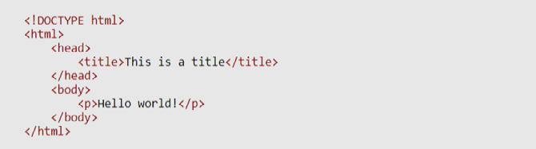

Hypertext Markup Language (HTML) is the standard markup language for creating web pages and web applications.
Web browsers receive HTML documents from a web server or from local storage and render the documents into multimedia web pages. HTML describes the structure of a web page semantically and originally included cues for the appearance of the document.
HTML elements are the building blocks of HTML pages. With HTML constructs, images and other objects such as interactive forms may be embedded into the rendered page.HTMLprovides a means to create structured documents by denoting structural semantics for text such as headings, paragraphs, lists, links, quotes and other items. HTML elements are delineated by tags, written using angle brackets. Tags such as < img /> and <input /> directly introduce content into the page. Other tags such as< p> surround and provide information about document text and may include other tags as sub-elements. Browsers do not display the HTML tags, but use them to interpret the content of the page.
HTML markup consists of several key components, including those called tags (and their attributes), character-based data types, character references and entity references. HTML tags most commonly come in pairs like <h1> and </h1>, although some represent empty elements and so are unpaired, for example <img>. The first tag in such a pair is the start tag, and the second is the end tag (they are also called opening tags and closing tags).
Another important component is the HTML document type declaration, which triggers standards mode rendering.
The following is an example of the classic "Hello, World!" program:
Tags: CodingScripting head HTML Introduction to HTML Landing Links semantics Structure Text